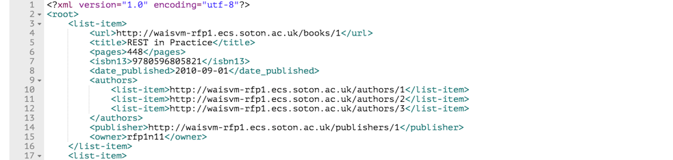

1. http://waisvm-rfp1.ecs.soton.ac.uk/
When using http verb OPTIONS, we can obtain the output of this URI. The output is shown as below.
In this way, OPTIONS, GET can be used on this resource.
When using http verb GET, it returns all information about the root endpoint.
Parameters
| message | Returns the description message of this root point.
Example Values: Welcome to ECS Library REST API. (TODO: write more here) |
| authors | returns the URL of publishers.
Example Values: http://waisvm-rfp1.ecs.soton.ac.uk/publishers |
| books | returns the URL of books.
Example Values: http://waisvm-rfp1.ecs.soton.ac.uk/books |
| publishers | returns the URL of publishers.
Example Values: http://waisvm-rfp1.ecs.soton.ac.uk/publishers |
Example
GET http://waisvm-rfp1.ecs.soton.ac.uk/
2. http://waisvm-rfp1.ecs.soton.ac.uk/books
When using http verb OPTIONS, we can obtain the output of this URI. The output is shown as below.
In this way, GET, POST, HEAD, OPTIONS can be used on this resource.
By using POST, we can post a new book in this library system. And if we just want to get a header of the response instead of body, we can use HEAD.
When using http verb GET, it returns a collection of books in the library system. All books are listed in the tags {list-item}{/list-item}, and we can know the abstract of each book.
Example
GET http://waisvm-rfp1.ecs.soton.ac.uk/books
Part of response
POST http://waisvm-rfp1.ecs.soton.ac.uk/books
3. http://waisvm-rfp1.ecs.soton.ac.uk/authors
When using http verb OPTIONS, we can obtain the output of this URI. The output is shown as below.
In this way, GET, POST, HEAD, OPTIONS can be used on this resource.
By using POST, we can post a new author in this library system. And if we just want to get a header of the response instead of body, we can use HEAD.
When using http verb GET, it returns a collection of authors in the library system. All authors are listed in the tags {list-item}{/list-item}, and we can know the abstract of each author.
Example
GET http://waisvm-rfp1.ecs.soton.ac.uk/authors
Part of response
POST http://waisvm-rfp1.ecs.soton.ac.uk/authors
4. http://waisvm-rfp1.ecs.soton.ac.uk/publishers
When using http verb OPTIONS, we can obtain the output of this URI. The output is shown as below.
In this way, GET, POST, HEAD, OPTIONS can be used on this resource.
By using POST, we can post a new publisher in this library system. And if we just want to get a header of the response instead of body, we can use HEAD.
When using http verb GET, it returns a collection of publishers in the library system. All publishers are listed in the tags {list-item}{/list-item}, and we can know the abstract of each publisher.
Example
GET http://waisvm-rfp1.ecs.soton.ac.uk/publishers
Part of response
POST http://waisvm-rfp1.ecs.soton.ac.uk/publishers
5. http://waisvm-rfp1.ecs.soton.ac.uk/books/ {book-id}
When using http verb OPTIONS, we can obtain the output of this URI. The output is shown as below.
In this way, GET, PUT, PATCH, DELETE, HEAD, OPTIONS can be used on this resource.
By using PUT and PATCH, we can update information of the book we have posted in this library system. Besides, DELETE can help to delete the book or some specific information we posted. And if we just want to get a header of the response instead of body, we can use HEAD.
When using http verb GET, it returns all information about the specific book that we requested.
Parameters
| url | Specifies the URL of the specific book, and the book id is allocated randomly by the library system. When the user posts a new book, this value is not required and it is only readable.
Example Values: http://waisvm-rfp1.ecs.soton.ac.uk/books/92 |
| title | Returns the name of the book that we requested. The type of title is string and its max length is 255. This value is required and not only readable when posting a new book.
Example Values: Steve Jobs |
| pages | Returns the page number of the book that we requested. The type of pages is integer and its value ranges from -2147483648 to 2147483647. This value is required and not only readable when posting a new book.
Example Values: 656 |
| isbn13 | Returns the ISBN13 code of the book that we requested. The type of ISBN13 is string and its max length is 13. This value is required and not only readable when posting a new book.
Example Values: 9781451648539 |
| date_published | Returns the date of publication. The type of publication date is date. This value is required and not only readable. This value is required and not only readable when posting a new book.
Example Values: 2011-10-24 |
| authors | Returns the URL of author’s name. The URL is chosen from the authors endpoint when posting a new book and its type is field. Also, the URL is required and not only readable.
Example Values: http://waisvm-rfp1.ecs.soton.ac.uk/authors/64 |
| publisher | Returns the URL of publisher’s name. The URL is chosen from the publisher endpoint when posting a new book and its type is field. Also, the URL is not required and not only readable.
Example Values: http://waisvm-rfp1.ecs.soton.ac.uk/publishers/64 |
| owner | Returns the name of person who posts the book in this system. The type of the owner is field. And it is readable only and not required when posting a new book.
Example Values: sw9n14 |
Example
GET http://waisvm-rfp1.ecs.soton.ac.uk/books/92
PUT&PATCH http://waisvm-rfp1.ecs.soton.ac.uk/books/92
Before
After

DELETE http://waisvm-rfp1.ecs.soton.ac.uk/books/315
Before
After
6. http://waisvm-rfp1.ecs.soton.ac.uk/authors/ {author-id}
When using http verb OPTIONS, we can obtain the output of this URI. The output is shown as below.
In this way, GET, PUT, PATCH, DELETE, HEAD, OPTIONS can be used on this resource.
By using PUT and PATCH, we can update information of the author we have posted in this library system. Besides, DELETE can help to delete the author or some specific information we posted. And if we just want to get a header of the response instead of body, we can use HEAD.
When using http verb GET, it returns all information about the specific author in the library system.
Parameters
| url | Specifies the URL of the author that we requested, and the author id is allocated randomly by the library system. When the user posts a new book, this value is not required and it is only readable.
Example Values: http://waisvm-rfp1.ecs.soton.ac.uk/authors/64 |
| name | Returns the author’s name. The type of name is string and its max length is 255. This value is required and not only readable when posting a new book.
Example Values: Walter Isaacson |
| owner | Returns the name of person who posts the author in this system. The type of the owner is field. And it is readable only and not required when posting a new book.
Example Values:sw9n14 |
Example
GET http://waisvm-rfp1.ecs.soton.ac.uk/authors/64
PUT&PATCH http://waisvm-rfp1.ecs.soton.ac.uk/authors/64
Before
After
DELETE http://waisvm-rfp1.ecs.soton.ac.uk/authors/239
Before

After
7. http://waisvm-rfp1.ecs.soton.ac.uk/publishers/ {publisher-id}
When using http verb OPTIONS, we can obtain the output of this URI. The output is shown as below.
In this way, GET, PUT, PATCH, DELETE, HEAD, OPTIONS can be used on this resource.
By using PUT and PATCH, we can update information of the publisher we have posted in this library system. Besides, DELETE can help to delete the publisher or some specific information we posted. And if we just want to get a header of the response instead of body, we can use HEAD.
When using http verb GET, it returns all information about the specific publisher in the library system.
Parameters
| url | Specifies the URL of the publisher that we requested, and the publisher id is allocated randomly by the library system. When the user posts a new book, this value is not required and it is only readable.
Example Values: http://waisvm-rfp1.ecs.soton.ac.uk/publishers/64 |
| name | Returns the name of the publisher that we requested. The type of name is string and its max length is 255. This value is required and not only readable when posting a new book.
Example Values: Simon & Schuster |
| location | Returns the name of person who posts the publisher in this system. The type of owner is field. And it is readable only and not required when posting a new book.
Example Values: New York |
| owner | Returns the name of person who posts the publisher in this system. The type of owner is field. And it is readable only and not required when posting a new book.
Example Values:sw9n14 |
Example
GET http://waisvm-rfp1.ecs.soton.ac.uk/publishers/64
PUT&PATCH http://waisvm-rfp1.ecs.soton.ac.uk/publishers/64
Before
After